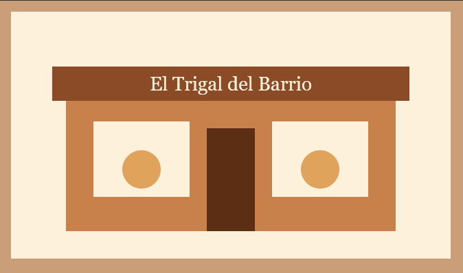

Quiénes somos
Somos una panadería familiar del barrio. Desde hace más de 15 años horneamos pan fresco cada madrugada con recetas de la casa.

Lo que nos hace diferentes
Usamos ingredientes locales, no usamos conservantes y el pan sale del horno a las 6:00 a.m. y a las 4:00 p.m.
Nuestro compromiso
Atender a los vecinos como se merecen: con buen precio, buen trato y pan caliente. Mira nuestros productos o escríbenos.